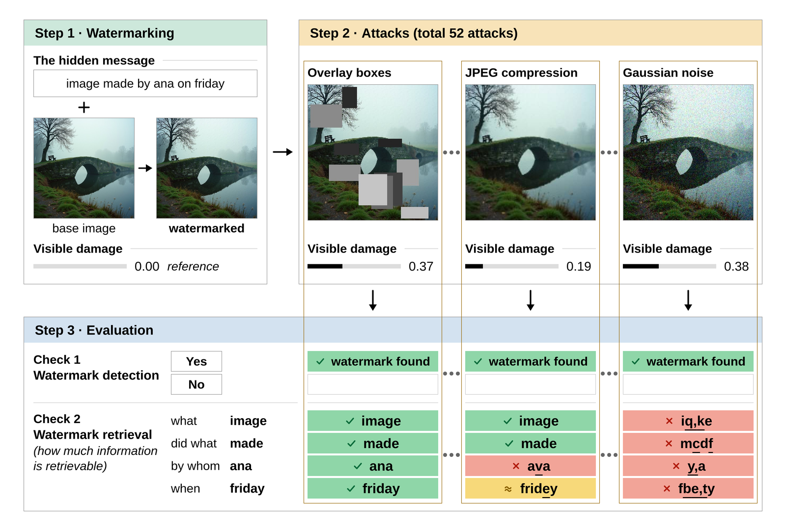

Image watermarking benchmark · ICLR 2027 submission, under review
SEALBench: A Comprehensive Benchmark for Image Watermark Detection, Robustness, and Recovery
SEALBench evaluates 4 in-generation and 11 post-hoc watermarking methods on real, manipulated and synthetic images under 52 attack conditions. Every attacked image is placed on one distortion axis, the attack-strength index (ASI), and every decoded message is tested on whether it still answers questions about its content (QSR).

Abstract
Abstract
As concerns over the misuse of Generative AI models continue to grow, watermarking has emerged as a promising solution, embedding a detectable signal into generated or existing images. Existing image watermarking benchmarks have three limitations: 1) inconsistency across data for comparing in-generation and post-hoc watermarking methods, 2) uneven attack settings for image/watermark distortion, and 3) bit accuracy that does not measure whether the decoded message retains its meaning. To this end, we present SEALBench, an image watermarking benchmark that evaluates 4 in-generation and 11 post-hoc watermarking methods on 25,864 real, 15,000 manipulated, and 12,665 synthetic images. We further evaluate image-level watermarking attacks in four attack categories, from single image transformations to editing or watermark removal followed by additional processing, and propose the attack-strength index (ASI) to unify all image-level watermarking attacks on a single damage axis. We evaluate and propose Question Success Rate (QSR), i.e. embedded message recovery, by testing whether a frozen language model can accurately answer questions using the extracted text. Our evaluation of state-of-the-art methods on SEALBench reveals interesting findings: a) both in-generation and post-hoc methods remain vulnerable to attacks, although their robustness varies significantly across attack types, b) attacks that produce similar image distortion can have different effects on watermark detection and c) high bit accuracy does not necessarily imply complete message recovery or preservation of the message’s meaning. We believe SEALBench will support more consistent evaluation of image watermark robustness and encourage research on methods that preserve both watermark detection and message recovery under different attack settings.
Three findings
From the introduction and Section 5 of the paper-
99.8% vs 24.7%
Attacks with similar mean ASI produce different detection rates. On manipulated images, Gaussian noise (σ = 10, mean ASI 0.233) and diffusion regeneration at strength 0.2 (mean ASI 0.243) give mean post-hoc TPR@1%FPR of 99.8% and 24.7%. In-generation methods show the same pattern: 98.5% and 74.7% at mean ASI 0.161 and 0.154.
Section 5.2 -
68.4% vs 53.3%
Neither family performs better under every attack. On the matched synthetic cohort, in-generation methods reach 68.4% mean TPR@1%FPR under category C2 model-based attacks, against 53.3% for post-hoc methods, but fall to 0–3% under strong cropping or rotation.
Section 5.3, Table 3 -
0.83 vs 0.44
High bit accuracy does not ensure message recovery. After attack, post-hoc methods on manipulated images have mean bit accuracy 0.83, complete-message recovery 0.39 and QSR 0.44. On the matched cohort, 42 of 364 post-hoc method-condition pairs have bit accuracy ≥ 0.9 but QSR ≤ 0.5.
Section 5.5, Figure 2
Leaderboard
Results by method
All numbers are copied from the paper's tables. Detection is TPR at 1% FPR, with thresholds calibrated on unwatermarked and attacked-unwatermarked images. C1–C4 are the four attack categories and All is the mean over every attacked condition. Click a column header to sort.
Results
Detection under each attack condition
The heat map shows TPR@1%FPR for every method and all 52 attack conditions. The curves place each condition at its mean ASI, so attacks can be compared at similar image distortion. Hover over a cell or line for exact values.
TPR@1%FPR against ASI, per attack type
The shaded band marks the AURSC window, ASI ≤ 0.2; AURSC is the normalized area under each curve inside it, averaged over all attack types. Each curve starts at the unattacked TPR at ASI 0. Line style follows payload class: dotted for identity-only methods, dashed for short sentences, solid for long sentences, and thick with square markers for in-generation methods.
Bit accuracy against QSR
Attack explorer
One image, sixteen attacks
Two FLUX.1-dev prompts from the matched synthetic cohort, each watermarked once by an in-generation method and once by VideoSeal, with a different sentence in each image. For every attack, the values are the benchmark's per-image records: the image's ASI, the detection decision at the calibrated threshold, bit accuracy, the decoded sentence, and the reader's answer to each stored question.
Benchmark
Images, image states and evaluation subsets
Source images
- Real
- 25,864 images from MultiFakeVerse, originally from EMOTIC, PIC 2.0, PIPA and PISC
- Manipulated
- 15,000 images from MultiFakeVerse with person-, object- or scene-level edits
- Synthetic
- 12,665 images generated from text prompts by six generators
- Unwatermarked
- 53,529 images in total
- Watermarked
- 739,818 images in total
Generators
- Stable Diffusion 2.1512 px · post-hoc and in-generation
- SDXL1024 px · post-hoc and in-generation
- FLUX.1-dev1024 px · post-hoc and in-generation
- Qwen-Image1024 px · post-hoc
- HiDream-I11024 px · post-hoc
- HunyuanImage-3.0 (distilled)1024 px · post-hoc
Prompts cover eight sub-classes:
Four image states
Evaluation subsets
- Post-hoc
- 1,600 real, 1,600 manipulated and 1,593 synthetic images
- Matched cohort
- 1,193 synthetic images matched by generator, prompt and seed, used to compare post-hoc and in-generation methods
- Evaluation set
- 4,793 unwatermarked and 91,046 watermarked images
Post-hoc and in-generation methods on the matched cohort watermark images from the same prompts and seeds and carry sentences from the same message corpus.
Comparison with prior benchmarks
Paper Table 1Methods
Eleven post-hoc and four in-generation methods
Post-hoc methods watermark an existing image. In-generation methods embed the watermark while the image is generated, here on SD2.1, SDXL and FLUX.1-dev (12 generator-method pairs). Methods with at least 64 payload bits also carry a sentence: an 11-character short message (55 bits) or a 28-character long message (140 bits).
Attack suite
52 attack conditions in four attack categories
Each condition is applied to the watermarked image and, with the same settings, to its unwatermarked counterpart. The number beside each condition is its mean ASI on synthetic images for post-hoc methods (paper Tables 5 and 6); for C1 and C2 the values follow the listed settings in order.
Metrics
How detection, robustness and recovery are measured
- TPR@1%FPR
- Detection rate on watermarked images at the threshold that admits 1% false positives. One threshold per method and evaluation subset, calibrated on unwatermarked and attacked-unwatermarked images.
- Attribution
- Open-set attribution accuracy at 1% FPR: the share of watermarked images that are detected and assigned to the correct identity in a 100-identity codebook. RingID is attributed over its 1,024 native keys.
- ASI
- Attack-strength index. The LPIPS distance between an attacked image and the same image before the attack, computed per image.
- AURSC
- Normalized area under the TPR@1%FPR-versus-ASI curve over ASI in [0, 0.2], computed per attack type and averaged over all attack types.
- Obs. Min@0.2
- The lowest TPR@1%FPR observed among attack conditions whose mean ASI is at most 0.2.
- Bit accuracy
- The fraction of embedded payload bits decoded correctly.
- Msg. Rec.
- Complete-message recovery: the share of decoded sentences that match the embedded sentence exactly.
- QSR
- Question Success Rate. A frozen Qwen2.5-7B-Instruct reader receives only the decoded text and answers stored questions about the original message (who, did what, which colour, which object, which day). QSR is the fraction answered correctly. Four further readers (Qwen3.5-9B, Ministral-8B, Gemma-3-12B, Llama-3.1-8B) are used for sensitivity analysis.
- sem-AURSC
- The AURSC calculation with QSR on the y-axis.
- bit-AURSC
- The AURSC calculation with bit accuracy on the y-axis.
Messages are encoded at 5 bits per character over a 32-symbol alphabet (a–z, space and . , ' - ?), padded with spaces to the class length and zero-padded to the method's capacity. A bit error changes one character and never shifts the rest, so a damaged payload decodes to damaged text that the reader sees.
Submit a method
Send your watermark for testing
We evaluate new post-hoc and in-generation watermarking methods under the same protocol as the methods above and add the results to the leaderboard. Submissions are made through a GitHub issue.
-
Open a submission issue
Use the watermark submission form on the code repository. Give the method name, the paper or preprint, the family (post-hoc or in-generation) and the payload capacity in bits.
-
Provide code that embeds and decodes
A public repository or archive with model weights and a licence that permits evaluation. The interface we call is shown on the right. In-generation methods provide a generation function for at least one of SD2.1, SDXL and FLUX.1-dev.
-
We run the full protocol
- Embedding on the evaluation subsets: 1,600 real, 1,600 manipulated and 1,593 synthetic images, or the matched cohort's prompts and seeds for in-generation methods.
- An identity payload from the 100-identity codebook, plus a sentence payload if the capacity is at least 64 bits.
- All 52 attack conditions, with thresholds calibrated at 1% FPR on unwatermarked and attacked-unwatermarked images.
-
You receive the results
Per-condition TPR@1%FPR, attribution accuracy, AURSC, Obs. Min@0.2, and, for sentence payloads, bit accuracy, complete-message recovery, QSR and sem-AURSC. The method is added to the leaderboard after you confirm the numbers.
# post-hoc methods def embed(image: Image, bits: np.ndarray) -> Image: # bits has the method's native length def decode(image: Image) -> np.ndarray: # recovered bits (0/1) or per-bit scores in [0, 1] # in-generation methods def generate(prompt: str, seed: int, bits: np.ndarray, generator: str) -> Image: # generator: "sd21", "sdxl" or "flux1" def decode(image: Image) -> np.ndarray: ... # Image = PIL.Image.Image
Release
What is released
The benchmark releases the prompt corpus, the embedded message files, per-image metadata, unwatermarked and watermarked images, the frozen chain specification, the evaluation subsets, and the calibration thresholds with their per-stratum false-positive rates. Scripts generate the corresponding attacked-unwatermarked and attacked-watermarked images.
The released per-image records and metric files are sufficient to reproduce every table and figure in the paper; a single script generates them. All generation, attack and evaluation procedures are seeded.
Re-running watermark embedding and decoding also requires the method keys and identity codebooks. These are not part of the public release and are provided to researchers on request for benchmark use.
Images derived from MultiFakeVerse are released only as far as its licence permits. The synthetic images, embedded messages, attack specifications, evaluation records and code are independent of that licence.
Citation
BibTeX
@misc{sealbench2026,
title = {{SEALBench}: A Comprehensive Benchmark for Image Watermark
Detection, Robustness, and Recovery},
author = {Anonymous},
year = {2026},
note = {Under review at ICLR 2027}
}